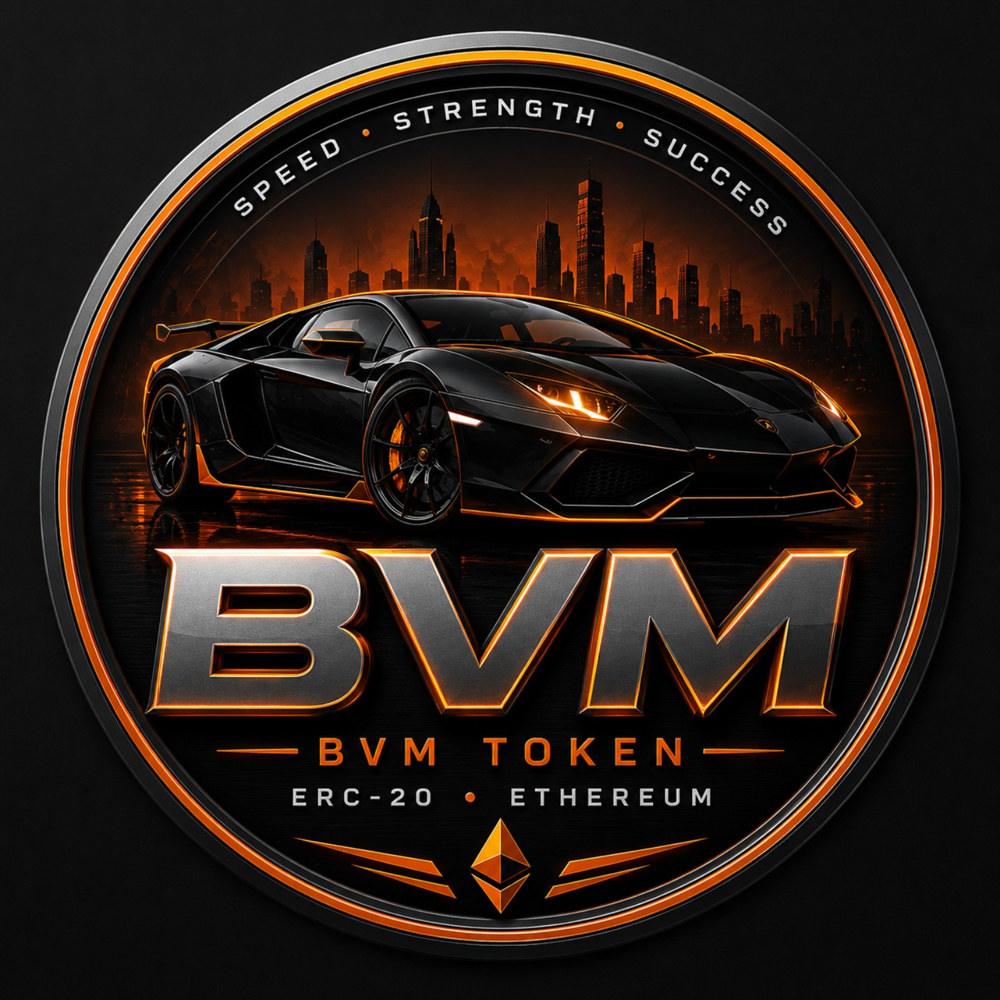

Спорткарний характер.
Прозорий ERC-20 контракт.
Laki (BVM) — токен у мережі Ethereum з максимальною пропозицією 10 000 BVM. На цій сторінці зібрані офіційна адреса контракту, дані про адміністративні функції, ліквідність та публічні посилання для перевірки.
Ключові дані без зайвих обіцянок.
0xC02cd09C60aBc64b0C77720326597430e118B4C1
Адміністративні функції розкриті відкрито.
Реалізація контракту доступна для перевірки через Etherscan. Користувачам слід самостійно звіряти поточний стан контракту перед взаємодією.
Функція mint доступна власнику, але total supply не може перевищити maxSupply у 10 000 BVM.
Власник токенів може спалити свої BVM. Якщо total supply зменшиться, нижче cap з'явиться простір, який owner може домінтити назад до максимуму, поки ownership активне.
Контракт містить owner-керований механізм паузи переказів. Це адміністративне право існує доти, доки ownership не буде відмовлено.
На сайті не заявляється про незалежний аудит безпеки. Інформація має інформаційний характер і не є інвестиційною, фінансовою або торговою порадою.
Децентралізований доступ до ринку.
BVM має пули ліквідності на Uniswap. Глибина ліквідності, активні діапазони, комісії та ринкові умови можуть змінюватися з часом.
Для вибору токена використовуйте саме офіційну адресу контракту. Не покладайтеся лише на назву або символ BVM.
Відкрити BVM на Uniswap →Перевіряйте перед взаємодією.
Що ми покращуємо далі.
Актуальні публічні дані про контракт і ліквідність.
Офіційний домен, логотип і контактні дані.
Оновлення токен-інформації в публічних сервісах.